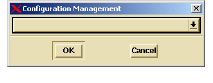

To choose your configuration management system
1 Start DIScover.
2 In the Browser, select File > CM.
The Configuration Management dialog box appears.

3 Use the drop-down arrow at the right of the box to display available CM systems.
Available options include Rational ClearCase, RCS, and Source Integrity. If your DIScover administrator has customized the configuration management system to accommodate another system, its name appears in the list as well.
4 Click OK.
DIScover returns to the main Browser window and your CM menu is now active. The CM menu options reflect those available in the selected CM system (see the following books for details on your specific selection).
Regardless of your selected CM system, it is important to remember that when you check out and modify files from within DIScover, the checked in files are not reflected in the information model. You need to wait until a new model is created with the updated files in order for you to see changes in the Browser.
Note: If you have access to a Developer Xpress client, you can also apply quality filters against your updated file prior to check in by using Submission Check. For more information, refer to Using Submission Check.